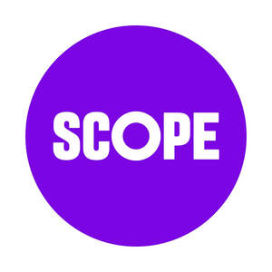
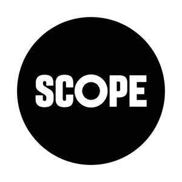

Trade Mark Journal No.2025/025 20 June 2025
UK00004180300 27 March 2025 (9,16,35,36,41,42,45)
Mark 1

Mark 2

- Class 9
- Computer software for publishing and sharing digital media and information via global computer and communication networks; computer software development tools; computer software for use as an application programming interface (API); computer software applications; computer software for creating indexes of information, indexes of web sites and indexes of other information resources; all relating to the disabled and/or those working with the disabled and/or in the disabled community.
- Class 16
- Printed matter, publications, newspapers, magazines and periodicals; books; promotional material, brochures and pamphlets; stationery; printed forms; office requisites; photographs, lithographs, engravings, posters and wall charts; greeting cards, diaries and calendars; decalcomanias; instructional and teaching materials.
- Class 35
- Charitable services, namely organising and conducting volunteer programmes and community service projects; recruitment consultancy services; assistance relating to recruitment and placement of staff facilitating the integration of disabled candidates in to the workplace; dissemination of information relating to the recruitment of disabled graduates; compilation of information into computer databases; market research; business consultancy services relating to management, marketing and promotion of fund raising campaigns; the bringing together, for the benefit of others, of a variety of goods, enabling customers to conveniently view and purchase cleaning, polishing and scouring preparations, abrasive preparations and materials none for dental use, soaps, shampoos, perfumes, non-medicated toilet preparations, preparations for the hair, non-medicated preparations for the care of the skin, cosmetics, dentifrices, bleaching substances for laundry use, illuminants, oils and greases, lubricants, candles, wicks, pharmaceutical preparations and substances, sanitary preparations, articles of hardware, articles of ironmongery and bins, ladders, metallic building materials, bath fittings, videos, CD's, DVD's, CD Roms, computer software, computer hardware, sound recording and reproducing apparatus, installation and apparatus all for lighting, heating, cooking and drying, parts and fittings for all the aforesaid goods, jewellery, horological and chronometric instruments, paper, wrapping and packaging materials, promotion and advertising materials, books, printed matter, stationery, greeting cards, posters, pictures, artists' materials (other than colour or varnish), paintbrushes, writing and drawing instruments, printed publications, postcards, indoor aquaria, adhesives (stationery), ordinary playing cards, diaries and photograph albums, leather, articles of luggage, briefcases, bags, umbrellas, parasols, walking sticks, pocket wallets and satchels, mirrors, baskets, bins and barrels none being metallic, picture frames, furniture, rails, hooks, holders (non-textile), rings and rods and rollers and tie backs all for curtains, bead curtains for decoration, small domestic utensils and containers (none of precious metals or coated therewith), combs, sponges (not for surgical use), brushes, materials prepared for brush-making, non-electric instruments and materials all for cleaning purposes, steel wool, glassware, porcelain ornaments and earthenware ornaments, yarns and threads for textile use, household textile articles, curtains made of textile or plastics materials, travelling rugs (lap robes), bed covers and table covers, duvets, quilts, articles of clothing, footwear and headgear, lace and embroidery and ribbons and braids all being textile smallwares, buttons, hooks and eyes, pins and needles, clothing fasteners, artificial flowers, badges (for wear), earrings and hair ornaments none of precious metal or coated therewith, hair curlers (not electrically heated) for attachment to the hair, wallpapers, carpets, rugs (floor coverings), mats, matting, linoleum, coverings for existing floors, wall hangings (non textile), games (other than ordinary playing cards) and playthings, gymnastic and sporting articles (other than clothing), decorations (other than candles or lamps) for Christmas trees, in a retail or department store or by means of telecommunications or from a general merchandise internet website or from a general merchandise catalogue by mail order; consultancy, advisory and information services in relation to the aforesaid services.
- Class 36
- Charitable fund-raising; organisation of collections for charitable purposes; consultancy and information services in respect of the aforementioned services.
- Class 41
- On-line journals, namely, blogs; electronic publishing services, namely, publication of digital media in the form of electronic magazines via global computer and communications networks; all relating to the disabled and/or those working with the disabled and/ or in the disabled community.
- Class 42
- Providing temporary use of on-line non-downloadable software for publishing and sharing digital media and information via global computer and communication networks; providing temporary use of on-line non-downloadable software development tools; providing temporary use of on-line non-downloadable software for use as an application programming interface (API); providing a web hosting platform for others for organizing and conducting meetings, social events and interactive text, audio, and video discussions; providing an on-line network environment that enables users to share data; all relating to the disabled and/or those working with the disabled and/or in the disabled community.
- Class 45
- On-line social networking services; all relating to the disabled and/or those working with the disabled and/or in the disabled community.
Scope
Representative: Barker Brettell LLP